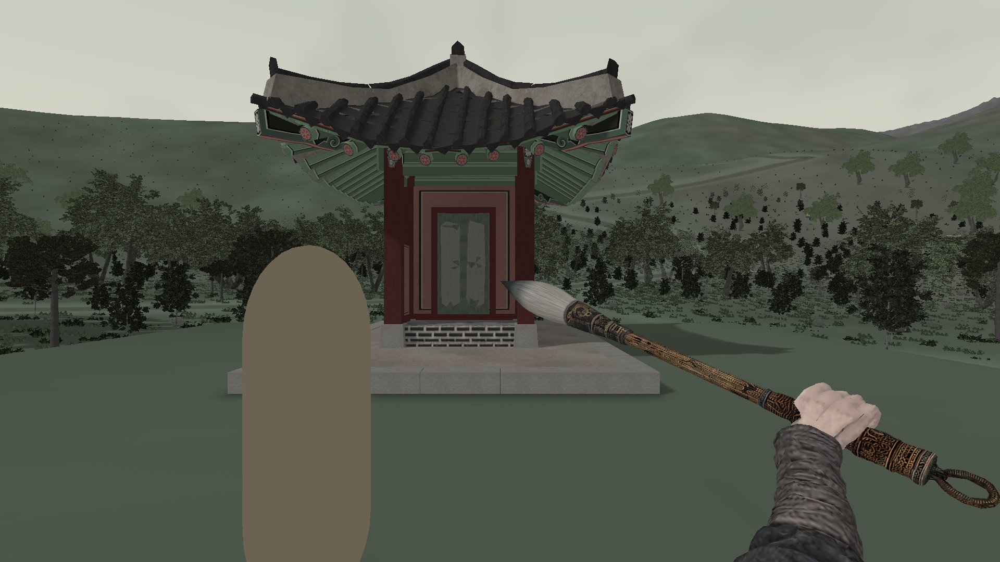
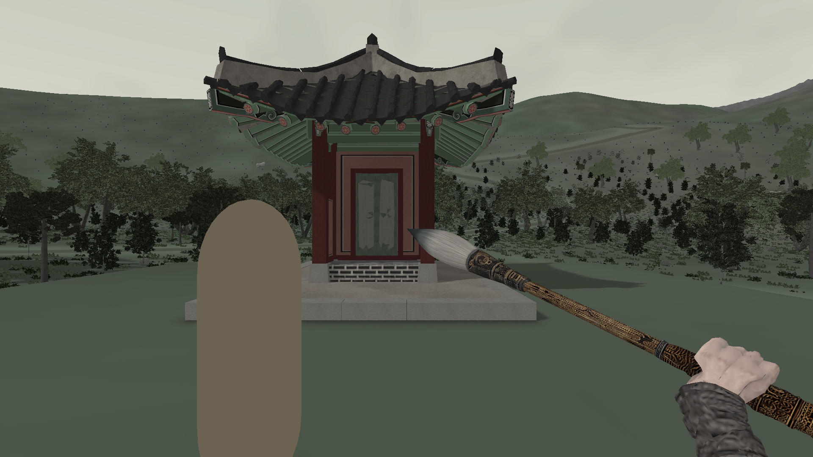
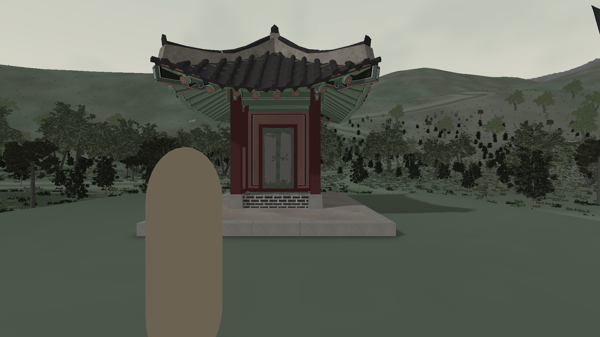

오행부 · 2026.09.15 · 현재 C02 / ThumbWrap작도 팔꿈치 안정화
손의 회전에 따라 팔꿈치까지 뒤집히던 계산을 분리했습니다. 팔꿈치는 아래·바깥쪽을 선호하고, 근접 IK는 이전 자세 주변도 탐색해 갑작스러운 전환을 줄입니다. 기존 엄지 방향과 파지는 유지합니다.
| 실제 Play 연속 획 | 수정 전 | 수정 후 |
|---|
| 인접 팔꿈치 최대 이동 | 28.04cm | 5.90cm |
| 팔꿈치의 어깨 대비 최대 높이 · 근접 팔 | +5.28cm | -1.93cm |
| 붓끝 최대 화면 오차 | 0.348px | 0.347px |
같은 7초 포인터 경로를 가상 Q·왼쪽 마우스로 전달했습니다. 실제 프레임 수 272/235로 다르며, 관측 간격 80ms 미만에서 인접 이동을 비교했습니다. 원시 획 평활화·팔 길이 확대 없음. 사람이 직접 작도한 체감 검수와 구분합니다.
중앙 작도 · 1080p 정지 비교

수정 전
수정 후 · 아래에서 올라오는 팔수치 검사는 기존 96항목을 통과했습니다. 손·소매의 전체 외형 완성을 뜻하지는 않습니다. 오른쪽 위 극단에서 손이 화면을 벗어나는 문제, 손 표면과 소매 접촉은 남겨 두지 않고 후속 목록에 기록했습니다.
남은 우상단 가시성 문제 보기

실패/후속 항목 · 붓끝 추종 수치가 맞아도 손이 보이지 않는 구도는 완성으로 처리하지 않습니다.수정·검사 보고서 · 연속 획 비교 수치 · 최종 Play 원자료 · 96개 합성 검사
현재 작업의 공백
씬의 누락 스크립트·깨진 참조는 0개입니다. 기능 연결과 사용자 경험의 공백은 별도로 남아 있습니다.
- 폐광 조사 이후: 귀환하라는 대사에 대응하는 보고 단계가 없습니다.
- 음향·동굴: 실제 장치에서의 째짐과 신고된 구멍 전체는 해결 검증이 끝나지 않았습니다.
- 성능: 최근 식생 추가 이후 이동 성능을 다시 측정해야 합니다.
- 관청 지도: 체크포인트와 별개의 발견 장소 표식이 없습니다.
- 임시 아트·통합 검사: 손·소매·오행부·NPC, 최신 시작 흐름의 저장·재실행·전투 조합이 남아 있습니다.
소환수 이동·공격, 수면 추가 개선 등 의도적으로 보류한 범위는 누락과 구분했습니다.
우선순위·근거·후속 작업 전체 목록 · 현재 씬 참조 점검
원본 보존 / 순차 정지 이미지 / 새 영상·빌드 없음